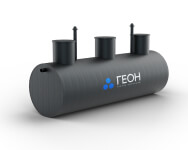
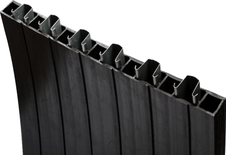
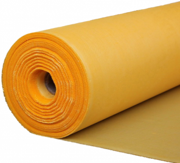

Другие предложения
Он хорошо выглядит, но без вот этого заголовка может потеряться
Стеклопластик
ПНД
Песконефтеуловитель комбинированный с сорбционным блоком представляет собой горизонтальную емкость полной заводской готовности, изготовленную из спиральновитого ПНД армированного ОМЕГА-профилем, с перегородками, тонкослойными модулями, сорбционной загрузкой, подводящим и отводящим патрубками, горловинами обслуживания, вентиляционными стояками, крышками и лестницами.
Предназначен для очистки от взвешенных веществ и нефтепродуктов. Сорбционный блок песконефтеуловителя увеличивает эффективность очистки стока, до необходимых показателей очистки ливневых и талых сточных вод до требований по количественному составу загрязняющих веществ в сточных водах, сбрасываемых в водоем рыбохозяйственного назначения.
Производительность
Толщина стенки
Диаметр сооружений
Длина сооружений
ОМЕГА-профиль увеличивает показатели кольцевой жесткости и снижает коэффициент линейного расширения
Армированный стеклопластик перекрестной намотки
Принцип работы заключается в том, что сточная вода по подводящему трубопроводу поступает в зону отстаивания песконефтеуловителя комбинированного с сорбционным блоком, где происходит снижение скорости потока и выпадение осадка на дно установки
Данная зона оборудована тонкослойным модулем, принцип действия которого заключается в укрупнении капель нефтепродуктов за счет действия сил межмолекулярного притяжения и ускорения всплытия на поверхность отстойника. Далее сточные воды попадают на двухслойный сорбционный фильтр. Первый слой — экологически чистый синтетический нетканый материал, где происходит более глубокая очистка от нерастворенных примесей взвешенных веществ и пленок нефтепродуктов за счет седиментационного эффекта. После этого сточные воды фильтруются через фильтрующую загрузку. В фильтрующей загрузке происходит очищение стоков от растворенных, мелкодисперсных загрязнений, нефтепродуктов, СПАВ и др. веществ
Дополнительно, существует возможность оборудования песконефтеуловителя комбинированного с сорбционным блоком:
Обслуживание ГЕОН-ПНУ СБ рекомендуется производить не реже одного раза в год, в период окончания эксплуатационного сезона
Обслуживание заключается в откачке слоя нефтепродуктов, воды, накопившегося осадка, мойке внутренних стенок емкости. Если песконефтеуловитель оборудован датчиками, то во время откачки содержимого их необходимо извлечь из корпуса, чтобы избежать поломки датчиков, очистить датчики от загрязнений и протестировать их работоспособность. Обслуживание сорбционного блока заключается в регенерации или замене сорбционной загрузки. После обслуживания и установки на место кассет с загрузкой и датчиков, ПНУ СБ должен быть заполнен водой до высоты выходного патрубка.
Стеклопластик
ПНД


{kind=link}
{kind=link}
{kind=link}
{kind=link}